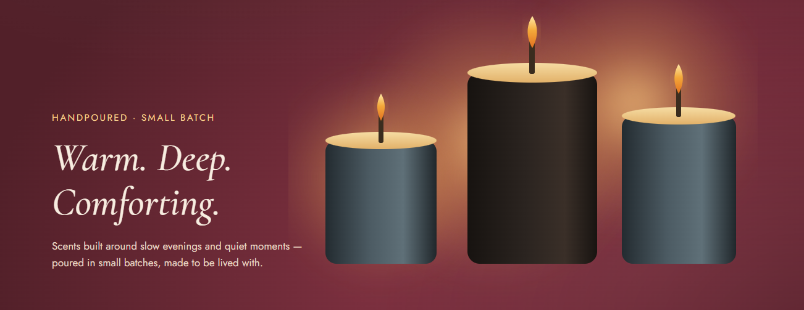
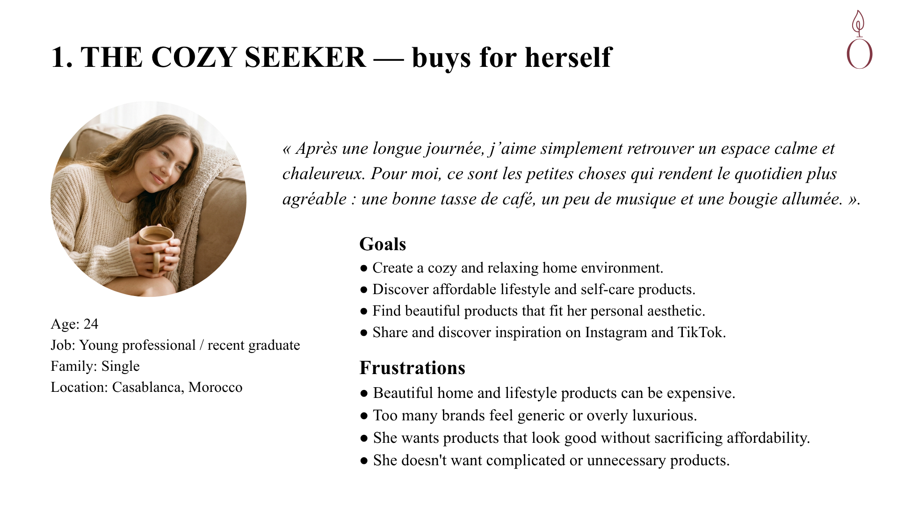
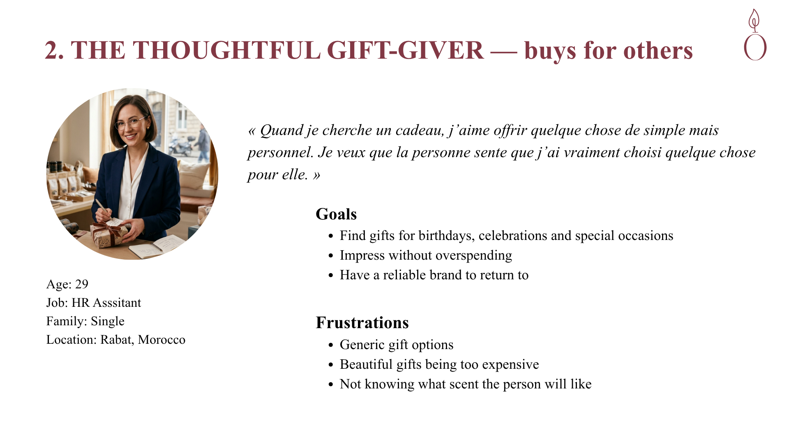
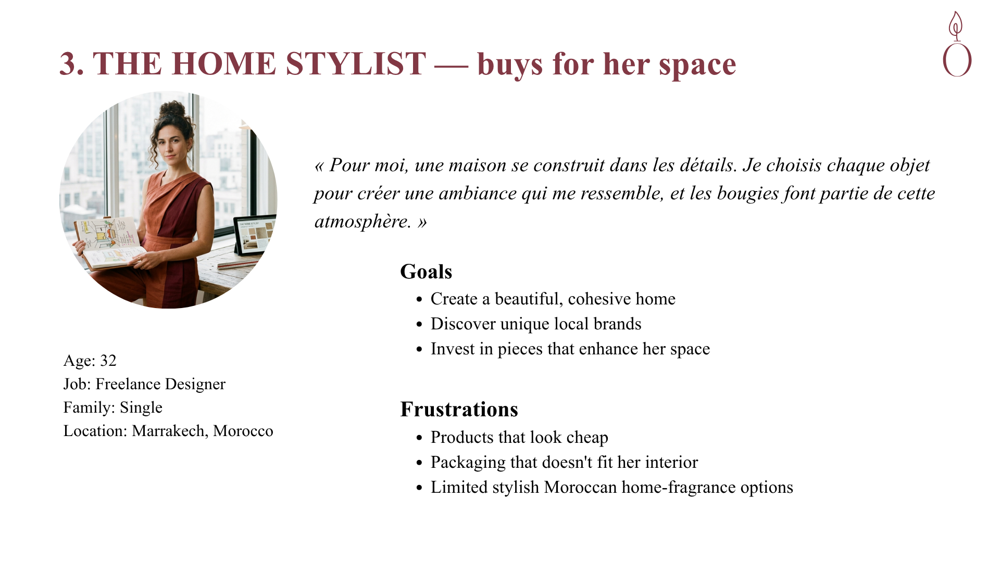
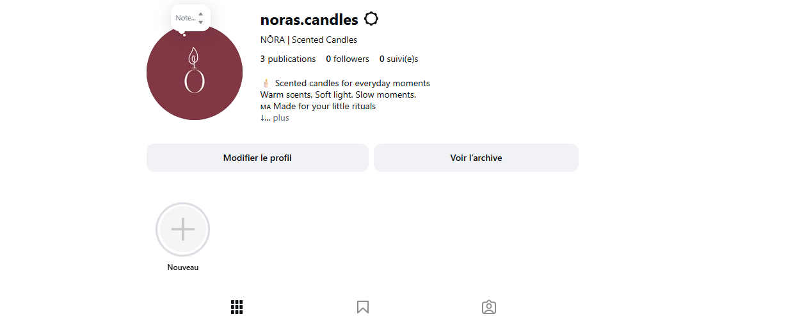
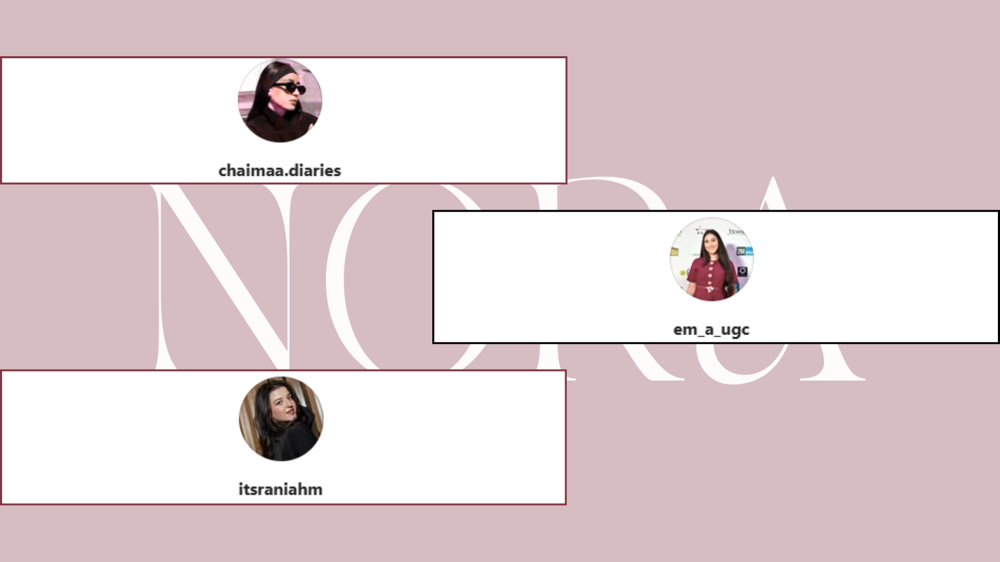
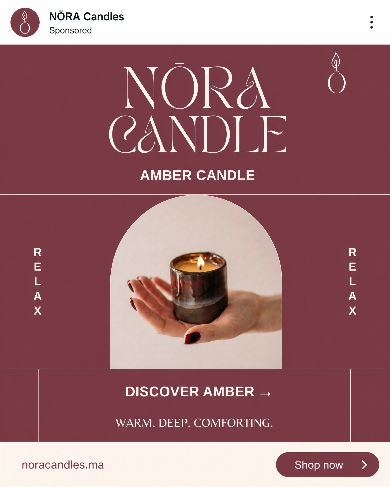
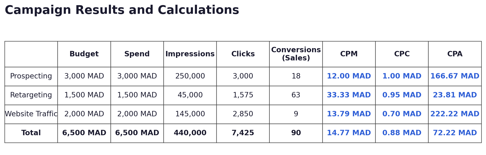

NŌRA Candles

NŌRA is a fictional Moroccan scented candle brand I built from the ground up as a self-directed portfolio project after completing my Master’s in Strategic Marketing and Digital Communication. I approached it as a real-world brand, moving from strategy and positioning to visual identity and digital execution. The project covers customer personas, brand identity, social media, influencer marketing, paid social, website design, SEO fundamentals, and campaign testing.Disclaimer: NŌRA is a fictional portfolio project. No products were sold, no advertising budget was spent, and there are no real customers or campaign results. The NŌRA Candles brand was developed as a digital marketing and branding project, focusing on brand identity, visual content creation, social media strategy, and audience positioning.
My Role
- Brand strategy and positioning
- Visual identity and branding
- Customer personas and audience analysis
- Social media and content strategy
- Influencer and paid social planning
Project Context
- Self-directed portfolio project
- Developed from strategy to digital execution
- Built as a fictional Moroccan candle brand
- No real customers, budget, or campaign results
Tools
- Canva
- Facebook / Meta
- Sprout Social
- Insense
- Meta Ads Manager
Personas
The personas were developed as part of the brand strategy and documented in the NŌRA Brand Guidelines. Instead of defining the target audience as one broad group, I created three distinct customer profiles, each representing different lifestyles, motivations, and purchasing behaviors.



Social Media Marketing
Before developing the content, specific content pillars were established to ensure that each type of communication supported NŌRA’s positioning and brand identity.
The content pillars were designed around NŌRA’s core attributes of warmth, calmness, minimalism, and modernity. Instagram was chosen as the primary platform because of its visual nature and its relevance to NŌRA’s target audience. The strategy focuses on a combination of product-focused content, lifestyle inspiration, gifting, and home aesthetics, allowing the brand to communicate both the product and the feeling associated with it.

The content strategy was designed to reflect NŌRA’s core attributes: warm, minimal, calm, and modern. The content direction combines product presentation with lifestyle moments, gifting inspiration, and styled home environments, while keeping a consistent visual identity across the brand’s Instagram presence.

Instagram was selected as one of the most important tools for NŌRA’s social media marketing. With the content pillars outlined, an Instagram presence was created to build brand awareness and communicate the brand consistently.
Using Canva, the content was developed around NŌRA’s warm, minimal, calm, and modern identity. The content direction combines product-focused communication, lifestyle inspiration, gifting, and home aesthetics, allowing the brand to communicate both the product and the feeling associated with it. Maintaining a consistent visual identity across the content helps strengthen brand recognition.
The NŌRA Instagram can be viewed on Instagram.
Sprout Social is a social media management platform used to plan, organize, and manage a brand’s social media activity. For NŌRA, the platform was included in the social media strategy to support content planning and maintain a consistent publishing schedule.
In using this tool, NŌRA was able to:
- Plan and organize content around different content pillars
- Add important dates and holidays to the content calendar
- Organize user-generated content and maintain brand consistency
- Plan social media posts with captions, calls to action, and relevant hashtags


Influencer marketing was selected as an important part of NŌRA’s digital marketing strategy to increase brand awareness, create authentic content, and connect with the brand’s target audience.
Based on the NŌRA influencer marketing campaign brief, micro influencers were selected as the most suitable option for the campaign. Larger influencers would require a higher investment, while working with multiple smaller creators could provide greater content variety and allow the brand to reach different audience segments.
As part of NŌRA’s digital marketing strategy, paid social advertising was planned to support brand awareness and reach potential customers through targeted campaigns.
Two campaigns were developed with different objectives. The first focused on awareness, with the goal of introducing NŌRA to new audiences and building brand recognition. An interest-based audience was considered to reach people whose interests and online behavior aligned with the brand’s target customers. The main KPIs identified for this campaign were impressions and ad recall, with CPM used as the cost-efficiency metric.
The second campaign focused on sales, targeting audiences who had already interacted with or shown interest in NŌRA. A retargeting approach was planned to re-engage people who had previously engaged with the brand’s content, with the objective of encouraging them to move further along the purchasing journey. CPA was identified as the main cost-efficiency metric for this campaign.


Reading the results as I would in a real campaign, CPM is higher for retargeting than prospecting because retargeting reaches a smaller and more specific audience. More importantly, the retargeting CPA is roughly seven times lower than the prospecting CPA. This reflects the purpose of the two-stage structure: the first campaign builds the audience, while the second focuses on people who are already closer to converting. If this were a real campaign, the difference between the two CPAs would be an important metric to monitor.
The calculations are straightforward and demonstrate the main measurement skills used in the analysis. CPM is calculated as spend divided by impressions, multiplied by 1,000. CPC is spend divided by clicks, while CPA is spend divided by conversions. Click-through rate (CTR) is calculated as clicks divided by impressions, resulting in 1.2% for prospecting, 3.5% for retargeting, and 1.97% for the website traffic campaign.
A separate campaign focused on website traffic rather than conversions produced the results shown above. Based on these figures, I calculated CPM, CPC, and CPA using their respective formulas and compared them with benchmark values for a Meta traffic campaign in the home and lifestyle category: 16.20 MAD for CPM, 0.85 MAD for CPC, and 240.00 MAD for CPA. The actual simulated values were 13.79 MAD for CPM, 0.70 MAD for CPC, and 222.22 MAD for CPA.
For this campaign, CPC is the most relevant cost-efficiency metric because the objective is website traffic and CPC directly measures the cost of generating clicks. The benchmark was 0.85 MAD, while the actual CPC was 0.70 MAD, representing a 17.65% difference. Since the actual CPC was lower than the benchmark, the campaign generated clicks more efficiently than expected. This suggests that the same targeting and creative approach could be considered for future campaigns.
Disclaimer: These numbers are fictional and were used for instructional purposes only. No advertising was actually run, as NŌRA is a fictional brand created for portfolio purposes.
Website Design
Choosing a quality hero image is essential for the NŌRA website. Using the NŌRA Assets and Images, five images were chosen for the hero image slideshow. With each picture selected, I wanted to demonstrate NŌRA's four brand attributes: warm, calm, minimal, and modern. To do this, I specifically chose hero images from the assets that included people enjoying relaxing moments at home and engaging in activities they love.
Keeping these standards in mind, I also wanted to showcase inclusion by capturing the product being used by a variety of different people with different characteristics, identities, and lifestyles. Lastly, the images were placed in a strategic order to have text comfortably and appealingly aligned on the opposite side of each image without losing the viewer's attention.
Brand voice is used to make the most powerful statements. While designing the website, several phrases were created for NŌRA.
Value Proposition:
NŌRA brings warmth, calm, and comfort to your everyday moments at home.
Mission Statement:
We believe that everyday moments deserve to be enjoyed with warmth, comfort, and a little time for yourself.
Slogan:
Light a moment. Feel at home.
As important as brand voice and value propositions are, sales are the ultimate goal. In order to encourage purchases, a featured NŌRA candle was placed below the value proposition to shift the user's focus toward discovering the product and making a purchase.
A/B Testing
A/B testing is a method of comparing two versions of a web page to determine which variation performs better. For NŌRA, the test was conducted randomly without user interference, using sales, visitors, and conversion rate (CVR) as the main metrics. The test focused on the call-to-action button on the landing page. Version A was the original version, with the button text reading "Shop Now", while Version B used "See More."
The A/B test results determined that Version A was the winner; however, both versions performed very similarly. Version A converted 1% better than Version B, with only 51% certainty that Version A would improve the conversion rate. This difference was not statistically significant, meaning that the results were not strong enough to confidently conclude that Version A was truly better.
Results
View the NŌRA website here. View the NŌRA Instagram here.

Next Steps
Although social media management, website design, and marketing are ongoing processes, NŌRA is a fictional brand and therefore does not require continuous upkeep. However, if I were to continue developing the project, there are several areas I would focus on improving, including image scalability, adding more diverse imagery, adding customer reviews, improving the website domain, and refining the value proposition, mission statement, and slogan.
One of the main improvements would be to work on image scalability. The images would need to be adapted more effectively to different screen sizes, particularly mobile devices, to ensure that important elements are not cropped and that the overall visual experience remains consistent across devices.
I would also like to add more images featuring men to further communicate that NŌRA is a product for everyone and not limited to a feminine audience.
Adding customer reviews would also be an important future step. Reviews would help build credibility, provide social proof, and create a stronger sense of community around the brand. Since NŌRA is a fictional brand, this could only be properly implemented if the brand were launched and real customers began purchasing the products.
The website domain could also be improved in the future so that it is directly connected to the NŌRA brand name and provides a more professional experience for visitors.
Finally, I would revisit the value proposition, mission statement, and slogan. These elements were created at an early stage of the project, and I would dedicate more time to refining them so that they align more closely with NŌRA's brand personality, positioning, and overall purpose.
Learnings
In conclusion, this project taught me a lot about social media marketing, digital marketing strategy, website design, and using tools such as Canva, Sprout Social, Insense, and Meta Ads Manager. Much of the work I created throughout this project was my first opportunity to apply marketing concepts in a practical way rather than simply learning about them theoretically.
This experience allowed me to develop skills that I would not have fully understood without putting them into practice. From building a brand strategy and developing customer personas to planning social media content, influencer marketing, paid social campaigns, SEO, website design, and A/B testing, I learned how different areas of digital marketing can work together to create a consistent brand experience. It also showed me that I can be a quick and efficient learner when working with new tools and concepts for the first time.
Most importantly, this project gave me the opportunity to bring together the knowledge I developed throughout my Master's in Strategic Marketing and Digital Communication and apply it to a complete project from start to finish.